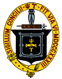
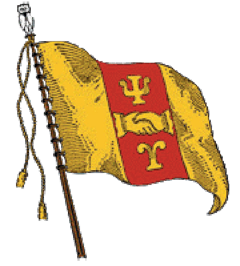
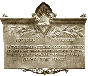
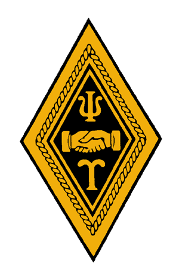
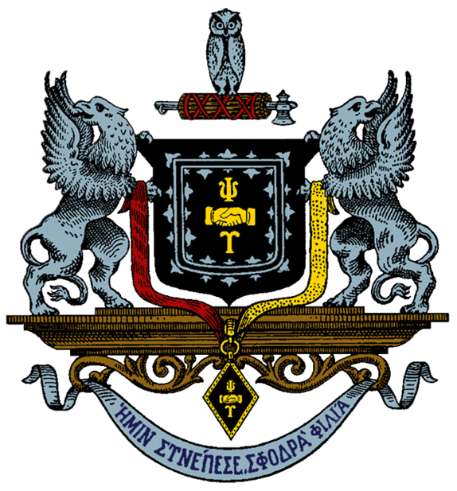

Exhibit
Heraldry
The system of arms adopted at the Convention of 1894, and the fifty chapter shields drawn under it.
In the fourteenth century, an elaborate pattern of heraldry, which is still recognized in sovereign countries, municipalities, societies, corporations, and families, was developed. During the Victorian era, interest in heraldry was revived and has since remained an important part of associations such as college fraternities.
In 1892, Albert P. Jacobs, Phi '73 (University of Michigan); Karl P. Harrington, Xi '82 (Wesleyan College); and George B. Penny, Chi '85 (Cornell University), acting as a Psi U heraldry committee, prepared and presented a report proposing the system of heraldry which was adopted at the Convention of 1894. This system is simple and uniform, yet follows the pattern of ancient heraldry quite well. It is obvious that these brothers had a thorough knowledge of the subject. Previous to the work done by this committee, the badge and colors were the only uniform symbolism of the Fraternity.
Fraternity Coat-of-Arms
The Arms of the Fraternity are described in heraldic terms as a black shield bearing hands and letters of gold as in our badge, around which emblems run what is known as a double tressure, flory counter flory, of silver.
The 'double tressure' alludes to the 'tie that binds,' the secrets, ideals, and aims of the Fraternity.
The black 'shield' was chosen not only because it is more effective than any other hue in line engraving (which was the chief use of the coat-of-arms), but also because it is the background of the badge.
The 'crest' consists of an owl surmounting Roman fasces. The owl was assigned by the Greeks to Pallas Athena as an emblem of her supernatural wisdom, and by the Romans to Minerva, Goddess of Wisdom. The 'fasces,' which the owl surmounts, was a term given to a bundle of elm sticks or branches bound together with leather thongs or lashes, and containing an axe with its blade projecting from the side. These were carried by 'lectors' (public officials attending Roman magistrates), and were symbols of power.
The colors of the Fraternity are represented by a garnet ribbon on the dexter side of the shield, and by a gold one at the left, from which, united below the shield, depends by a ring the Psi Upsilon badge. The supporters are two silver griffins, typifying watchfulness and strength.
The motto, selected from Plato, translates to: "Unto us has befallen a mighty friendship." For a Greek-letter fraternity, a Greek motto is necessary.
Chapter Coat of Arms
Most fraternities have only one coat-of-arms used by the Fraternity in general, with no special symbols for the individual chapters. Only a few have a system of employing a national coat-of-arms and a similar yet distinctive device for each chapter. Psi U's system involves three principle features:
1. Identity of crest;
2. Mottoes framed on a uniform plan; and,
3. Shields, each combining, in accordance with a carefully arranged schedule, the principal emblems of the Fraternity (the letters and clasped hands) with the peculiar emblem of the Chapter.
Click on the image for its heraldic description and motto.
Click on the University name for a high resolution download jpg.
Seal of the Executive Council
The seal of the Executive Council consists of the shield and crest of the Fraternity, surrounded by an oval ribbon or garter of gold, inscribed with the the Council's Greek motto.

The Colors
The Fraternity colors of garnet and gold were chosen at the Convention in 1878. Garnet was chosen to honor the parent chapter, being the college color of Union, and the gold refers to the badge. In early years, chapters had their own colors.=
Regulation Badge
The badge is a diamond-shaped pin of gold. Within a gold border, a black enameled field bears the clasped hands, with a "Psi" above and "Upsilon" below. The Psi Upsilon badge is worn over the heart on a shirt or vest under a suit jacket.
Official Flag
The flag of the Fraternity is composed of three vertical divisions or strips of equal width. The middle stripe is garnet, the others gold. The center strip bears in gold the Greek letters 'Psi' and 'Upsilon,' and the clasped hands, as on our badge. On the staff of the flag is to be perched a white owl. The flag was designed and adopted with the heraldry work of 1894.

Founders' Plaque
The Founders' Plaque was designed by William Ordway Partridge, Lambda '83 (Columbia University). The plaque features the names of the seven founders below a replica of the Psi Upsilon badge. Bronze replicas were distributed to the chapters in 1908. Unfortunately, the newest chapters do not have plaques, as they could not be recast.
Other insignia



All fifty
The chapter arms
Every chapter bears the Fraternity arms differenced by its own charges. Follow one through to its chapter page.
 Theta
Theta Delta
Delta Beta
Beta Sigma
Sigma Gamma
Gamma Zeta
Zeta Lambda
Lambda Kappa
Kappa Psi
Psi Xi
Xi Alpha
Alpha Upsilon
Upsilon Iota
Iota Phi
Phi Omega
Omega Pi
Pi Chi
Chi Beta Beta
Beta Beta Eta
Eta Tau
Tau Mu
Mu Rho
Rho Epsilon
Epsilon Omicron
Omicron Delta Delta
Delta Delta Theta Theta
Theta Theta Nu
Nu Epsilon Phi
Epsilon Phi Zeta Zeta
Zeta Zeta Epsilon Nu
Epsilon Nu Epsilon Omega
Epsilon Omega Theta Epsilon
Theta Epsilon Nu Alpha
Nu Alpha Gamma Tau
Gamma Tau Chi Delta
Chi Delta Zeta Tau
Zeta Tau Epsilon Iota
Epsilon Iota Phi Beta
Phi Beta Kappa Phi
Kappa Phi Beta Kappa
Beta Kappa Beta Alpha
Beta Alpha Phi Delta
Phi Delta Lambda Sigma
Lambda Sigma Alpha Omicron
Alpha Omicron Sigma Phi
Sigma Phi Delta Nu
Delta Nu Phi Nu
Phi Nu Theta Pi
Theta Pi Tau Epsilon
Tau Epsilon Delta Omicron
Delta Omicron